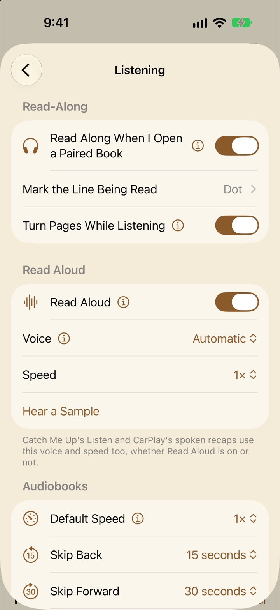

Read-Along and audiobooks
Pair a book with its audiobook and read while it’s narrated, the line being read marked and the pages turning along. This guide covers pairing, how Libretto prepares a pair, reading along, the audiobook player, and Read Aloud for books without an audiobook.
Pairing a book with its audiobook
A pair is an ebook and its audiobook, joined so you can read and listen as one book. You need both in your library: the ebook in Books (an EPUB or another text book; Read-Along doesn’t do PDFs or comics) and the audiobook in Audiobooks. If you’re adding books, see Getting started.
Ways to pair
- When you add them. Add a book or an audiobook whose other half is already in your library, and Libretto asks Read and Listen Together? Tap Pair Them, or Not Now to leave it for later.
- Ready to Pair. The Read-Along page lists books and audiobooks with the same title under Ready to Pair; tap Pair. Home’s Read-Along section says how many are ready.
- From the book. Pair with Audiobook… is in the book’s ⋯ menu (under Listen) and in its Book Details (the Listening card). Pick the audiobook from Choose the Audiobook, which puts the likeliest ones first under Best Match.
- From the audiobook. Touch and hold it in Audiobooks and choose Pair with Ebook….
- From the Read-Along page. Pair a Book & Audiobook… lets you pick both.
The Read-Along page is under See All in Home’s Read-Along section, or it can be a tab of its own (Settings → Home & Tabs). Touch and hold a pair there for Read Along, Listen, Read Without Audio, Pause Preparing or Resume Preparing, and Unpair…. Paired books wear a headphones badge and paired audiobooks a book badge, with a ring while they’re being prepared, and the Books tab’s Read-Along chip shows only paired books.
Different editions
Pairing works best when the ebook and the audiobook are the same edition. Where they differ (an abridged recording, a different translation, an extra introduction), the parts that match still read along, and the rest is handled as audio that isn’t in the book, or text that isn’t in the audiobook (see Reading along). If, once it’s all prepared, much of the narration didn’t match the text, the book’s ⋯ menu says “These files may be different editions” under Read Along.
Unpairing
Unpair… is in Book Details, in the audiobook’s menu, and on the Read-Along page. It asks first. The book and the audiobook both stay in your library; only the words matched to the narration are deleted, and pairing them again prepares them again.
Preparing, a part at a time
To mark each line as it’s read, Libretto has to know when every word is spoken. It works that out on your device: it listens to the audiobook with Apple’s on-device speech recognition and matches what it hears to the ebook’s text, word by word. The first time, your device may download Apple’s speech recognition for your language. Read-Along doesn’t need Apple Intelligence.
Libretto doesn’t make you wait for the whole book:
- It listens in pieces of up to ten minutes, starting where you’ll listen: the audiobook’s place, or your place in the ebook.
- It’s ready to play once 20 minutes from there are matched, usually within a minute. The status says “Ready · preparing 42%”.
- It carries on while you read, through the rest of the book. When you leave Libretto, it keeps going in the background where iOS allows, and iOS shows its progress as “Preparing Read-Along for …”. Closing the app doesn’t lose what’s done.
- Open somewhere that isn’t ready yet and the work moves there: the page says “Preparing this part of the book…”, and it starts playing once that part is matched.
How it’s going
The book’s ⋯ menu shows the status under Read Along, and so does each pair on the Read-Along page:
- Preparing 12%
- Matching the first part. Not ready to play yet.
- Ready · preparing 42%
- Ready to read along; the rest of the book is still being prepared.
- Paused at 30%
- You paused it. Resume Preparing carries on.
- Paired
- All done.
- Couldn’t prepare
- Something stopped it. Tap the pair for Couldn’t Prepare Read-Along, which says why, with Try Again.
Touch and hold a pair on the Read-Along page for Pause Preparing (handy on a hot phone or a low battery) and Resume Preparing. Things that stop it include a missing file (“The book’s or audiobook’s files are missing. Try importing them again.”) and a PDF or comic on the book side.
Reading along
With Read Along When I Open a Paired Book on (it is, to start with), opening a paired book reads along: press play and the narration starts from your place. You can also start from Read Along in the book’s long-press menu or Book Details, from Read Along in the audiobook player, or from the Read-Along page, which always reads along. With the setting off, a paired book opens as a plain book, and the Read Along switch in its ⋯ menu turns the narration on for this time.
Play, and the transport bar
Play and pause sit on the page controls. Tap the middle of the page for the menu, and its bottom bar has the full transport: speed, skip back and forward (by your Skip lengths), play, and the time left in the chapter. With a keyboard, the space bar plays and pauses.
The marker
The line being read is marked, and the pages turn by themselves. Choose how in Settings → Listening → Mark the Line Being Read:
- Dot Default
- A small dot in the margin beside the line being read. Easy to find at a glance, and covers nothing.
- Highlight
- A soft highlight behind the whole line, like a highlighter pen. The most visible.
- Underline
- A thin line under the line being read.
- None
- No marker. The pages still turn with the narration.
Below them, Color sets the marker’s ink: Subtle (the default: the page’s own ink and highlighter, kept faint) or yellow, orange, red, pink, purple, blue or green, which stand out more. The same color is used by Auto-Scroll’s reading guide. In Scroll mode, the marked line runs on down the screen until it’s near the bottom, then the page moves it back up near the top, so the text moves seldom, like turning a page.
Looking around while it plays
With Turn Pages While Listening on (the default), you can turn pages, open Contents or follow a link while the narration plays on. A Back to Narration bar shows the narration’s chapter and how far away it is (“2 pages back”, “40 pages ahead · Chapter 9”); tap it to turn back to the words being read. Turning back to that page yourself, or the narration catching up with you, does the same. The bar’s Play from Here moves the narration to the page you’re on instead.
While it’s paused, turning pages is reading, and the narration comes with you. If the narration is somewhere else when you press play (you jumped away, say), a pill asks first: Resume Narration turns back to where it stopped and plays on, and Play from Here starts from the top of this screen.
With Turn Pages While Listening off, the pages follow the narration while it plays: the page buttons dim, and trying to turn says “Pages follow the narration while it plays” until you pause.
Starting somewhere else
Touch and hold a word and choose Play from Here (the ▶ in the menu) to start the narration there. Going to a bookmark, a highlight or a search result moves the narration along with the page, and it keeps playing if it was.
One place for the pair
A paired book and audiobook share one place, and the newer one wins: read on and the audiobook moves with you; listen on and the book does. So Continue on Home, the widgets, your other devices and Siri all agree. When one side has got well ahead of the other, Libretto asks rather than jumping:
- Opening the book: “The narration got to Chapter 14 · Go there?”, with how many pages ahead. Tap to go, or ✕ (Keep This Place) to stay.
- In the audiobook player: “You read on to Chapter 12 · Listen from there?”. Tap to listen from there, or ✕ (Keep Listening Here).
On Home, a paired book’s card in Continue has Read and Listen buttons, so you can pick up either way: Listen starts the audiobook and opens the player.
Audio that isn’t in the book
Opening credits, a bonus excerpt or a narrator’s introduction aren’t in the ebook. While one plays, the page gives way to the book’s cover, grayed out, with “This part of the audiobook isn’t in the ebook.”, a countdown (“Text resumes in 0:42”) and Skip to Text. At the very end it offers Back to Book. The other way round, text the audiobook doesn’t read (a preface the recording leaves out) says “This part of the ebook isn’t in the audiobook.” when you try to play there.
The audiobook player
Audiobooks live in the Audiobooks tab. Libretto plays MP3, M4A, M4B, AAC, FLAC, WAV, AIFF and CAF. Add a single file, several files picked together (they become one book, in file-name order), or a zip of a whole book; in the Files app, a folder in Libretto’s folder becomes one book.
Now Playing
- Chapters come from the markers built into the file (most M4B audiobooks have them), or one chapter per file. The list button opens Chapters, and Bookmarks beside it.
- Speed goes from 0.5× to 3×, without the chipmunk voice. Each book keeps its own speed. “Time left” is worked out at the speed you’re listening at.
- Skip back and forward are 15 and 30 seconds unless you change them, with previous and next chapter beside them.
- Sleep timer: the menu offers the last one you used first (“Again: 30 Minutes”), then End of Chapter, End of Next Chapter, and 60 down to 5 minutes. While it’s set, the button shows the time left. It fades out over the last few seconds, except in the last chapter, so the book still finishes.
- Bookmarks: the bookmark button adds one at this moment (it never removes one). Delete one in the Bookmarks list and you have 5 seconds to Undo. In a pair, bookmarks are shared: one made while listening opens the book at those words, and one made while reading plays from them.
- AirPlay sends the sound to a speaker or Apple TV. The Lock Screen and Control Center have the controls too, and it plays on in the background.
- Read Along (for a paired audiobook) opens the ebook at the words being read, and the ✨ is Catch Me Up.
The mini player
While a book is loaded, a mini player sits above the tab bar with Back, Play and Forward, and the chapter and time left under the title. Tap it for Now Playing, or swipe it sideways to put it away: the audio stops and your place is kept.
Finishing
A finished audiobook opens paused at its end, marked Finished, with Listen Again. Touch and hold an audiobook for Mark as Finished or Mark as Unfinished.
To take audio with you on Apple Watch, see iPad, Duo, Watch and TV.
Read Aloud for any book
No audiobook? Read Aloud reads any EPUB or other text book in your device’s own voices, marking the words with the Read-Along marker and turning the pages as it goes. It’s for books without a paired audiobook, and doesn’t do PDFs or comics.
- Start it from ⋯ → Read Aloud, which has Play (then Pause and Resume), Voice, Speed, Stop at End of Chapter and Stop Reading Aloud.
- With Read Aloud on in Settings, there’s also a ▶ on the page controls, and Play from Here when you touch and hold a word.
- It reads from the top of the screen (or the word you chose), on into the next chapter. Once started, the menu’s bottom bar has its controls: speed, play, Stop at End of Chapter, and ✕ to stop.
- Turn away and it reads on, with Back to Read Aloud and Play from Here, just like Back to Narration.
- It carries on with the screen locked, and the Lock Screen’s play and pause work it. Playing an audiobook stops it.
Voice is Automatic to start with: the most natural voice installed in your device’s language. Speed goes from 0.75× to 2×. More natural voices can be downloaded in the Settings app, under Accessibility → Spoken Content → Voices.
Settings → Listening

Read-Along
- Read Along When I Open a Paired Book On
- Opening a paired book reads along. Off, it opens as a book, and Read Along in its ⋯ menu starts the narration. Opening from the Read-Along page always reads along.
- Mark the Line Being Read Dot
- Dot, Highlight, Underline or None, and its Color (Subtle). See The marker.
- Turn Pages While Listening On
- Look around the book while the narration plays, with Back to Narration to return. Off, the pages follow the narration until you pause.
Read Aloud
- Read Aloud On
- Puts Read Aloud’s ▶ on the page controls and Play from Here in the menu for selected text, in books without a paired audiobook. Off, it’s still in the ⋯ menu.
- Voice Automatic
- The voice for Read Aloud, and for Listen in Catch Me Up.
- Speed 1×
- 0.75× to 2×.
- Hear a Sample
- Plays a sentence in the voice and speed you’ve chosen.
Audiobooks
- Default Speed 1×
- The speed a book starts at the first time you play it. Change it for one book in Now Playing, and that book keeps its own.
- Skip Back 15 seconds
- Used everywhere: Now Playing, the mini player, the Lock Screen and Control Center, Shortcuts and the Read-Along transport.
- Skip Forward 30 seconds
- The same, forward. Both go from 5 to 90 seconds.
- Smart Rewind On
- Playing again after a pause of 10 seconds or more goes back a little first, more the longer the pause (up to 30 seconds after an hour). In a paired book it goes back to the start of the sentence instead.
- Sleep Timer Fades Out On
- The sound fades over the sleep timer’s last few seconds rather than stopping mid-word.
- Headphone Presses Next and Previous Chapter
- What pressing your headphones’ button twice or three times does: change chapter, or Skip Forward and Back. Once still plays and pauses.
With an Apple Watch paired, Audio on Apple Watch is here too (see iPad, Duo, Watch and TV). For every setting in one place, see Every setting.
Questions
How long does preparing a book take?
It’s ready to play once 20 minutes from where you’ll listen are matched, usually within a minute. The rest is prepared while you read, and in the background where iOS allows. You can read along long before it’s finished.
Does Read-Along need Apple Intelligence or an internet connection?
It doesn’t need Apple Intelligence; it uses Apple’s speech recognition on your device. The first time, your device may need to download that speech recognition for your language. After that, matching happens on the device.
The marker is a line or two off. What can I do?
Touch and hold the word being spoken and choose Play from Here, or tap Back to Narration if it shows. If a whole stretch is off and the book’s ⋯ menu says “These files may be different editions”, the ebook and audiobook probably differ there.
Why won’t Libretto pair my PDF?
Read-Along works with EPUBs and other text books, not PDFs or comics, because it needs the book’s words to match the narration to. Read Aloud doesn’t do PDFs either.
I listened on a walk. Will the book be at the right page?
Yes. The pair shares one place, and the newer one wins, so the book opens where the narration got to. If that’s far from where you were reading, Libretto asks first: “The narration got to … · Go there?”.
Can I turn pages while it’s playing?
Yes, with Turn Pages While Listening on (the default). The narration plays on, and Back to Narration brings you back to it. Turn it off in Settings → Listening if you’d rather the pages always follow.
Does unpairing delete anything?
Only the matched words. The book and the audiobook stay in your library, with your place and bookmarks. Pairing them again prepares them again.
Read-Along data is taking up space. Can I clear it?
Yes: Settings → iCloud & Storage → Storage has Free Up Read-Along Data, which clears what finished pairs and unpaired ones left behind. It asks first.
Can Read Aloud use Siri’s voice?
Apps can’t use Siri’s own voice. The nearest is a Premium voice, downloaded in the Settings app under Accessibility → Spoken Content → Voices; with Voice on Automatic, Libretto picks the most natural one you have.